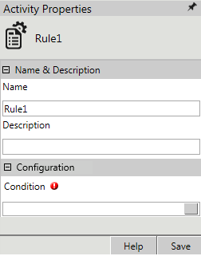
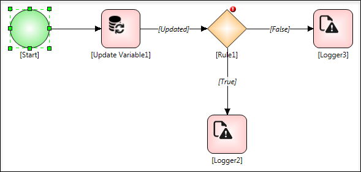
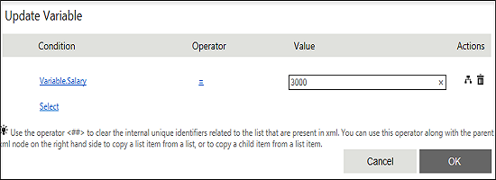
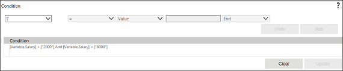

No
Activity description:
The Rule Activity allows complex rules or expressions to be built into the workflow. The expression will either result in 'true' or 'false'. The workflow engine evaluates the expression and assigns the result (true/false) to the output. The engine determines the path of the workflow from the output.
Activity Properties:
The Rule activity has to be configured by specifying appropriate values for the different properties in the Activity Properties area. The Activity Properties can be accessed by clicking on the Activity Properties tool in the tool bar or by selecting the appropriate option from the right click menu for the Rule activity. The Activity Properties are organized under the following groups of related properties. The properties under each group are described in this topic.

Name & Description
The properties in the Name & Description group have been described below. You can use these properties to specify the name and description for the activity.
Name - This property can be used to specify a name for the activity.
Property Type: Optional (This property needs to be set only if necessary.
)
Description - This property specifies a brief description to be displayed for the activity.
Property Type: Optional (This property needs to be set only if necessary.)
Configuration
The property in the Configuration group has been described below. You can use this property to specify the decisions.
Condition - This property allows the user to frame complex expressions for the workflow execution. The expression results either in 'true' or 'false'. The workflow engine, after evaluating the expression and getting the result, decides on the path for the activity, as per the process design.
Property Type: Mandatory (This property must be set if the action is to be executed.)
Steps to set the Condition property
See Rule - Condition for a detailed description of the Condition property window.
See the Using XML Variables section in the About the XML Variable User Interface topic for details on how to use the XMLVariables to build the expression.
Activity outputs:
The Rule Activity returns the following values -
True: Displayed when the rule condition is true
False: Displayed when the rule condition is false
Example for a Rule Activity:
Step 1: Design a workflow as shown in the following figure.

Step 2: In the Start Activity declare a variable Salary.
Step 3: In the 'Set Variable' property of Update variable activity, perform the following actions:

Step 4: In the Condition property of Rule Activity, perform the following actions:
[Variable.Salary]>2000 And Variable.Salary<6000

Step 5: On the link connecting the right logger, select False and display an error message.
Step 6: On the link connecting the left logger, select True and display the value of the variable.Salary.
Output: The Variable.Salary will be updated to 3000, and in the rule condition the condition will be checked. The rule activity will return true and execute the logger at the bottom of the rule activity displaying the value of the variable Salary in the Logger Console.
Exception Behavior
Each activity has the Raise Error on Unhandled Linked Output property on click of which, it shows all the default configured mapped error outputs in red with their check boxes selected.
See Mapped Error Outputs for more details.